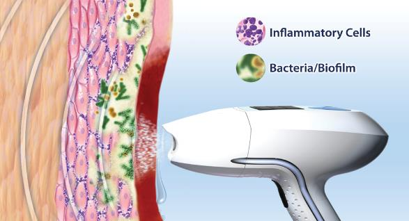
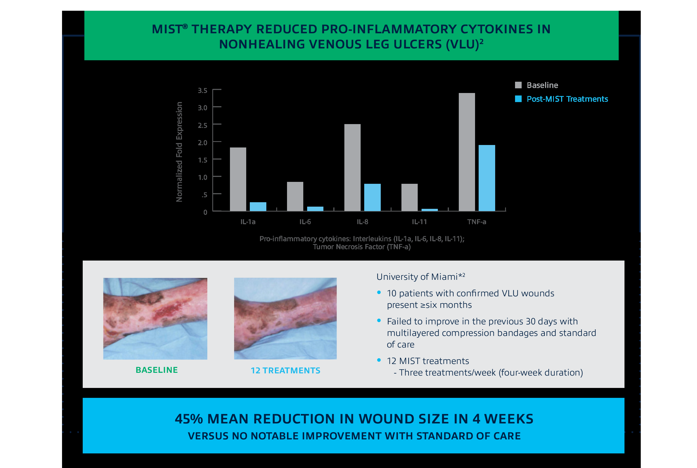
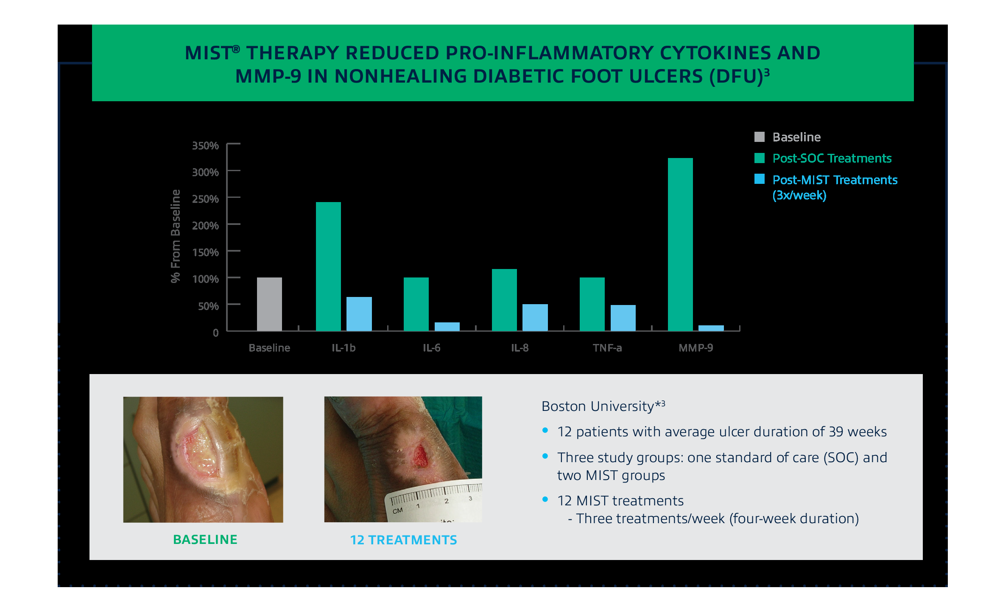
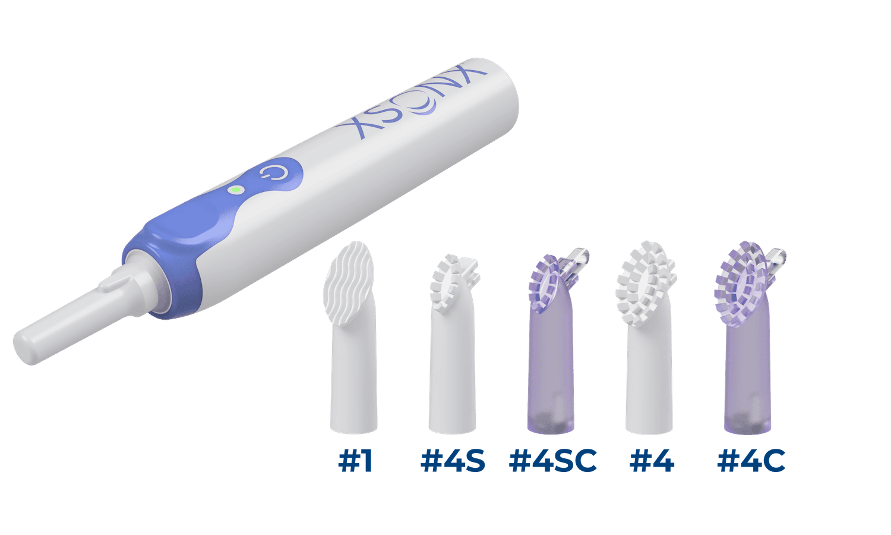
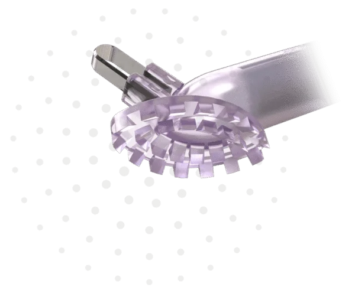

Wound Bed Preparation
Clean the Wound Bed
Three different technologies for removing slough, fibrin and biofilm. Not interchangeable.
SANUWAVE
UltraMIST®

SANUWAVE illustration
Low-energy ultrasound mist for cleansing and maintenance debridement, without touching the wound.
How it worksPer UltraMIST IFU
- Ultrasound atomizes saline; the mist carries energy to the wound
- Generator, treatment wand and single-use sterile applicator
- Indication: wound cleansing and maintenance debridement by removal of fibrin, yellow slough, exudate and bacteria
SafetyContraindications
- Not near electronic implants (e.g. over the chest with a pacemaker)
- Not over the lower back or uterus in pregnancy, or over malignancy
- Possible tingling or redness
Evidence snapshotsSANUWAVE summary; swipe


Manufacturer evidence summary slides (cytokine studies, small cohorts). Not head-to-head trials.
ResourcesDrive
- UltraMIST IFU (PL-61044)
- Reimbursement guide and DFU necessity guide
- Inflammation evidence summary and patient brochure
Arobella Medical
Qoustic Wound Therapy System™
Arobella website image
Low-frequency ultrasound for contact (excisional) or non-contact debridement and irrigation.
Cleared usesFDA K131096
- Surgical, excisional or sharp-edge debridement of acute and chronic wounds and burns
- Cleansing irrigation and lavage
- Contact or non-contact maintenance debridement
- Preparing the wound bed for a graft
- Used with sterile saline or other approved wound solutions
Source: Arobella IFU and FDA 510(k) K131096.
Treatment coursePer Arobella IFU
1 to 3 treatments per week; typical course about 2 weeks or more, per physician order.
Clinical studies and brochure from Arobella pending review.
XSONX
XSONX™ Sonic Debridement

XSONX handpiece and single-use heads
Cordless handheld sonic tool with single-use heads for slough, fibrin and biofilm.
Heads and setupPer XSONX materials
- #1 Scrubbing head: wound and periwound cleansing
- #4 Debriding head: small teeth for slough and pockets
- #4C: adds a 4.5 mm double-sided loop curette
- 2 AAA batteries, about 50 to 70 debridements; about 30-second setup
Before / afterXSONX website case; swipe

Single manufacturer-posted example; wound type and timeline not stated. Patient-photo consent to be confirmed with XSONX.
Manufacturer-reported outcomesNot peer-reviewed trials
- About 10 minutes saved per procedure in a clinical study; 1 to 4 minute average debridement
- Pain scores down 92%; 93% preferred it to sharp debridement (across XSONX studies)
- Khumalo SAWC Fall poster: 5 DFU patients, cleaning similar to scalpel and curette with less pain
Source: XSONX brochure and poster as summarized by Sheridan. Pending full-text review.
SafetyPer XSONX IFU
Contraindications include non-revascularized PAD ulcers and malignant wounds. See full IFU.
Contact
Talk with Sheridan
Text Abiad and we will follow up.
Please do not include patient information in text messages.